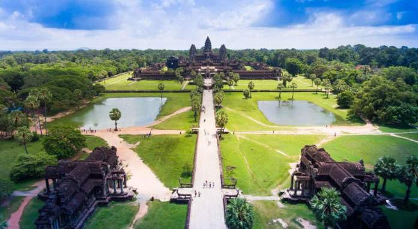
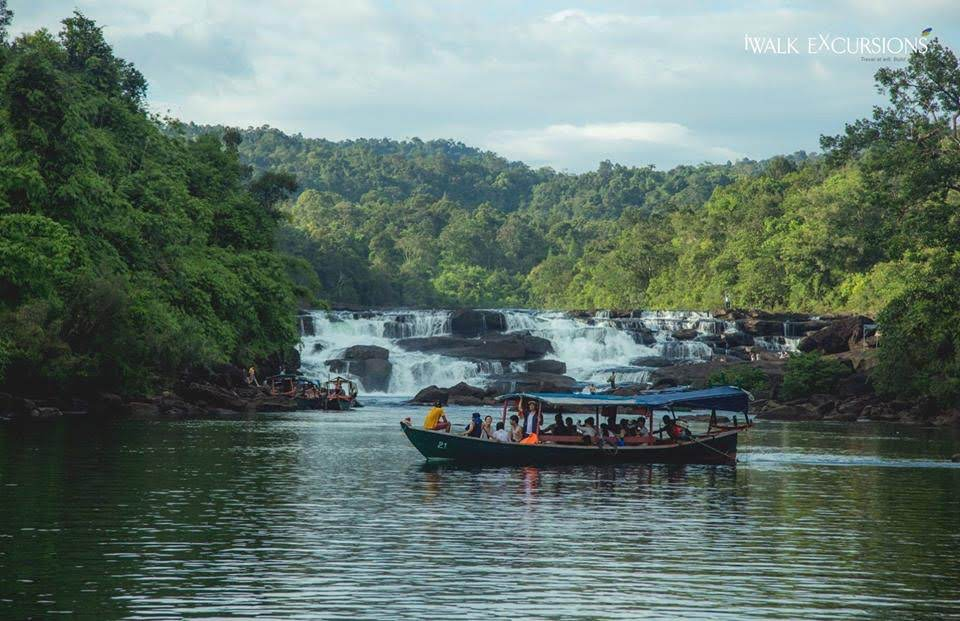

ប្រទេសកម្ពុជា គឺ ជាប្រទេសមួយដែលមានវប្បធម៏ និង អរិយធម៏ចាស់ជាងគេក្នុងទ្វីបអាស៊ីអាគ្នេយ៍។
ទោះបីជាប្រទេសកម្ពុជា មានប្រវត្តិស្ថិតនៅក្រោមអាណានិគមន៍នៃប្រទេសមួយចំនួន និង មានសង្រ្គាមស៊ីវិលអស់ជាច្រើនឆ្នាំក៏ដោយ តែបច្ចុប្បន្ននេះ កម្ពុជាមានសុខសន្តិភាពពេញបរិបូរណ៍ ប្រជាពលរដ្ឋ និង ភ្ញៀវទេសចរអន្តរជាតិ អាចធ្វើតំណើរកម្សាន្តបានគ្រប់ទីកន្លែង ជាមួយនិង ហេដ្ឋារចនាសម្ព័ន្ធ ដ៏ ស្រស់ស្អាត តំបន់ទេសចរណ៍ដ៏សម្បូរបែប ទាំងតំបន់ទេសចរណ៍ធម្មជាតិ តំបន់ទេសចរណ៍វប្បធម៏ និង តំបន់ទេសចរណ៍កែច្នៃរាប់រយកន្លែង
ចំណុចដ៏មានសក្តានុពលទាំងអស់ខាងលើនេះហើយ ដែលជំរុញឱ្យវិស័យទេសចរណ៍ បានដើរតួនាទីយ៉ាងសំខាន់ សម្រាប់សេដ្ឋកិច្ចកម្ពុជា ដើម្បីចូលរួមក្នុងការអភិវឌ្ឍន៍សេដ្ឋកិច្ចកម្ពុជា ដើម្បីចូលរួមចំណែកក្នុង ការអភិវឌ្ឍន៍សេដ្ឋកិច្ចកម្ពុជា ប្រជាពលក្នុងប្រទេសកម្ពុជាគួរបង្វែរចាប់អារម្មណ៍អំពីការធ្វើដំណើរកម្សាន្តទៅក្រៅប្រទេស មកធ្វើដំណើរកម្សាន្ត ក្នុងស្រុក ដែលចំណាយអស់តិច និង អាចជួយសេដ្ឋកិច្ចកម្ពុជាបានយ៉ាយច្រើន តាមរយៈការបង់សេវាកម្សាន្ត ជួយផ្តល់ការងារសម្រា ប់ប្រជាពលរដ្ឋមូលដ្ឋាន (លក់អាហារ លក់វត្ថុអនុស្សវរីយ៍សម្រាប់តំបន់ ។ល។)
និង ជួយក្នុងការប្រើប្រាស់សេវាផ្សេងៗរបស់រដ្ឋ។ យើងងាកមកមើលអំពីវិស័យទេសចរណ៍នៅក្នុងប្រទេសកម្ពុជាយើងវិញ ឃើញថាប្រទេសមួយនេះពិតជាមានធនធានធម្មជាតិ និង មានសម្បត្តិបេតិកភ័ណ្ឌជាតិជាច្រើន ដែលអាចទាក់ទាញភ្ញៀវជាតិ និង អន្តរជាតិឱ្យចូលទស្សនាឥតគណនា។
រាជធានីភ្នំពេញ
ព្រះបរមរាជាវាំង នៃព្រះរាជាណាចក្រកម្ពុជា
មានទីតាំងស្ថិតនៅតាមបណ្តោយព្រះមហាវិថីសុធារស សាងសង់ឡើងនៅឆ្នាំ ១៨៦៦ នៅក្នុងរាជកាល ព្រះបាទនរោត្តម។
នៅក្នុងព្រះបរមរាជវាំងមាន៖ - ប្រាសាទទេវាវិនិច្ច័យ ជាកន្លែងដែលសម្រាប់ព្រះមហាក្សត្រឡើងគ្រងរាជ្យ - ប្រាសាទខេមរិន្ទ ជាកន្លែងដែលព្រះមហាក្សត្រ និង អគ្គមហេសីគង់នៅ - ប្រាសាទសំរានភិរម្យ ជាកន្លែងដែលព្រះមហាក្សត្រឡើងគ្រងរាជ្យ - ហោរបាគូ ឬ ហោរព្រះខ័នជាកន្លែងទុកដាក់វត្ថុសម្រាប់សោយរាជ្យ - ច័ន្ទឆាយា ជាកន្លែងដែលគេហាត់រាំ របាំព្រះរាជ្យទ្រព្យ និង របាំថ្វាយព្រះមហាក្សត្រ ព្រះញ្ញាតិវង្សានុវង្ស និង ពួកមន្រ្តីជាន់ខ្ពស់ ។
តាមបណ្ដាលខេត្តក្រុង
- ខេត្តសៀមរាបអង្គរវត្ត
មណីដ្ឋាននេះមានភ្ញៀវជាតិ និង អន្តរជាតិចូលមកទស្សនាកម្សាន្តយ៉ាងច្រើន កុះករដើម្បី បានដឹង ទីកេរណ៍ដំណែលនៃមរតករបស់បុព្វបុរសជំនាន់ដើមដែលបានបន្សល់ទុក។
- ប្រាសាទព្រះវិហារ (ខេត្តព្រះវិហារ)

ប្រាសាទព្រះវិហារ មានទីតាំងស្ថិតនៅលើជួរភ្នំដងរ៉ែក ជាប់ព្រំប្រទល់ប្រទេសថៃ និងមានចម្ងាយ ១០៨ ម៉ែត្រពីទីរួមខេត្តព្រះវិហារ ក្នុងភូមិ ស្វាយជ្រុំ ឃុំកន្ទូត ស្រុកជាំក្សាន្ត ខេត្តព្រះវិហារ។
- កំពង់សោម(ខេត្តព្រះសីហនុ)

កំពង់សោម ជាកន្លែងសម្រាកលំហែកាយ និងកម្សាន្តដ៏មានប្រជាប្រិយភាពរបស់កម្ពុជាទាំងភ្ញៀវជាតិនិង អន្តរជាតិ ដែលមានទេសភាពខៀវស្រងាត់ អមដោយកោះ តូចធំជាច្រើន នៅជាប់នឹង ផ្ទៃសមុទ្រពណ៌ខៀវដ៏ធំល្វឹងល្វើយ ។
- តាតៃ(ខេត្ត កោះកុង)
រមណីដ្ឋាន តាតៃ កំពុងតែមានភាពភាពពេញនិយមពីភ្ញៀវជាតិនឹង អន្តរជាតិ ទៅទស្សនាកម្សាន្តនៅក្នុងពេលសម្រាកកាយរបស់ពួកគេ។ វាមិនត្រឹមតែបានផ្តល់នូវភាពរីករាយប់ុណ្ណោះទេ ហើយវាបានធ្វើឲភ្ញៀវទេសចរណ៍ជាប់ចិត្ត និង ចងចាំទុកក្នុងចិត្តមិនអាចបំភ្លេចបាន។